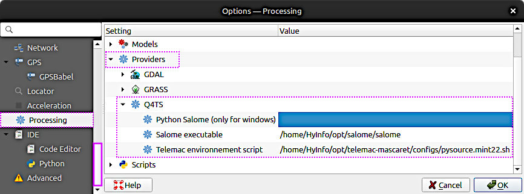

TELEMAC (Installation)#
Preface#
This tutorial walks you through installing open TELEMAC-MASCARET on Debian Linux-based systems (including Ubuntu and derivatives like Linux Mint). Plan for roughly 1-2 hours and a stable internet connection; the downloads exceed 1.4 GB.
Developer instructions
The TELEMAC developers provide up-to-date build guidance at https://gitlab.pam-retd.fr/otm/telemac-mascaret/ > BUILDING.md, though documentation for optional components remains limited.
This section covers only the installation of TELEMAC. For tutorials on running hydro(-morpho)dynamic models with TELEMAC, see the TELEMAC tutorials section.
A couple of installation options are available:
Continue to read and walk through the following sections.
If you are using the Mint Hyfo Virtual Machine, you can skip the setup tutorials here. TELEMAC v8p3 is already installed and configured, so you can proceed directly to the TELEMAC tutorials. Treat this VM as a training environment: it is great for learning and running sample cases, but it is not intended for performance-critical, application-scale modeling.
Load the TELEMAC environment and check if it works with:
cd ~/telemac/v8p3/configs
source pysource.hyfo.sh
config.py
TELEMAC is also available through the SALOME-HYDRO software suite, which is a spinoff of SALOME. However, the principal functionalities of SALOME-HYDRO may migrate to a new QGIS plugin. Therefore, this eBook recommends installing TELEMAC independently from any pre- or post-processing software.
The Austrian engineering office Flussplan provides a Docker container of TELEMAC v8 on their docker-telemac GitHub repository. Note that a Docker container represents an easy-to-install virtual environment that leverages cross-platform compatibility, but affects computational performance. If you have the proprietary Docker software installed and computational performance is not the primary concern for your models, Flussplan’s Docker container might be a good choice. For instance, purely hydrodynamic models with small numbers of grid nodes and without additional TELEMAC module implications will efficiently run in the Docker container.
Basic Requirements#
Good to know
Installing TELEMAC on a Virtual Machine (VM) is a convenient way to get started and to run sample cases, but it is not recommended for application-scale models due to the performance overhead of VMs.
Get comfortable with the Linux Terminal; you will need it to compile and potentially troubleshoot TELEMAC’s build workflow.
Throughout this tutorial, we refer to the package open TELEMAC-MASCARET as TELEMAC. MASCARET is a one-dimensional (1D) module, while the methods emphasized here focus on two-dimensional (2d) and three-dimensional (3d) modeling.
Admin (sudo) rights required for installing basic and optional requirements
Superuser privileges (sudo for super doers list) are required for many steps in this workflow, such as installing packages, editing system configuration, and writing to system directories. On Debian, sudo access is typically granted by installing sudo, adding your account to the sudo group, and managing permissions safely with visudo (which edits /etc/sudoers). For detailed setup instructions, see the tutorial Debian Linux and talk to your system administrator.
Working with TELEMAC requires software to download source files, compile them, and run the program. The mandatory software prerequisites for installing TELEMAC on Debian Linux are explained in the following sections.
Python3#
Estimated duration: 5-8 minutes.
Python3 has been installed by default on Debian since version 10 (Buster), and it is required to run TELEMAC’s compiler/launcher scripts. To start Python3, open a Terminal and run python3; to exit, use exit() or press Ctrl+D.
TELEMAC needs the NumPy library; most workflows also rely on SciPy and Matplotlib. Because TELEMAC is non-standard, having Python headers and a clean environment helps.
To install the common system packages, run:
sudo apt update
sudo apt install python3-numpy python3-scipy python3-matplotlib python3-pip python3-dev python3-venv
Got Qt Errors?
If an error occurs during the installation, install the extended dependencies (includes Qt) with the following command:
sudo apt install libgl1-mesa-glx libegl1-mesa libxrandr2 libxrandr2 libxss1 libxcursor1 libxcomposite1 libasound2 libxi6 libxtst6
Then re-try to install the libraries.
If you are on an older Debian release that does not include distutils in the default Python, also install python3-distutils.
To test if the installation was successful, type python3 in Terminal and import the three libraries:
Python 3.11.1 (default, Jul 25 2030, 13:03:44) [GCC 9.3.0] on linux
Type "help", "copyright", "credits" or "license" for more information.
>>> import numpy
>>> a = numpy.array((1, 1))
>>> print(a)
[1 1]
>>> exit()
None of the three library imports should return an ImportError message. To learn more about Python read the section on Packages, Modules and Libraries.
Git#
Estimated duration: <5 minutes.
Installation and usage of Git are covered in the git section of this eBook. In addition to what is described there, you will need Git Large File Storage (Git LFS) to handle large assets if a TELEMAC-related repository uses it. On Debian, you usually only need git (not git-all, which pulls many extras), plus git-lfs. Install and initialize:
sudo apt update
sudo apt install git git-lfs
git lfs install
git lfs install sets up LFS for your user account; so it is harmless even if a given repository does not use LFS.
GNU Fortran 95 Compiler (gfortran)#
Estimated duration: 3-10 minutes.
TELEMAC’s Python-based build system requires a Fortran compiler; the common choice on Debian is the GNU Fortran compiler (gfortran), which is backward-compatible with GNU Fortran 95 and supports newer standards. Debian provides gfortran from its standard repositories. To install it, open a terminal and run:
sudo apt update
sudo apt install gfortran
After installation, verify your setup with gfortran --version; the compiler must be on your PATH for TELEMAC’s scripts to find it.
If the gfortran installation fails…
Ensure the standard Debian “main” component is enabled in your APT sources so the gfortran package is available. Edit /etc/apt/sources.list as root (or add a file in /etc/apt/sources.list.d/), then run sudo apt update. Verify availability with apt-cache policy gfortran or apt search gfortran; note that gfortran is a metapackage that installs the current default version (for example, gfortran-12 or gfortran-13). Package details are listed here: https://packages.debian.org/search?keywords=gfortran.
More Compilers and Essentials#
Estimated duration: 2-5 minutes.
For building TELEMAC and its dependencies, you need C/C++ and CMake. Install Debian’s build-essential (which provides gcc, g++, and make) and cmake; these are required to compile sources, including parallel (MPI) builds, though MPI itself is provided by packages like OpenMPI that you will install later. The dialog package is optional but useful because some helper scripts use simple text interfaces. For editing shell scripts you can use gedit (read more, or alternatives such as Nano or Vim). Run:
sudo apt update
sudo apt install -y build-essential cmake dialog gedit gedit-plugins
Set Up Installation Path#
Up to this point, software has been installed via Debian’s package manager (APTITUDE, apt). In contrast, TELEMAC is downloaded (i.e., git-cloned) from its GitLab repository into a directory you choose. Its build/install workflow is notably non-standard, so path choices matter. Select one of the following setups:
Single user without admin rights:
ROOT=/home/<USERNAME>/opt(that is,ROOT=$HOME/opt) (XDG-conformant alternative:ROOT=$HOME/.local)Shared use without root: only if a group-writable location already exists, for example an NFS share like
ROOT=/srv/shared/telemacSystem-wide (admin required) on Debian-based systems: preferred
ROOT=/usr/local(binaries in/usr/local/bin, libraries in/usr/local/lib);ROOT=/optis also acceptable for a self-contained tree
In the sections that follow, we demonstrate a single-user installation of TELEMAC (including SALOME) with ROOT=/home/HyInfo/opt.
Get the TELEMAC Repo#
Estimated duration: 25-40 minutes (large downloads).
Fetch the TELEMAC sources with Git-LFS. In terminal, create or choose your working directory (here: /home/HyInfo/opt - see above), and change (cd) into it; for example:
cd /home/HyInfo/opt
git clone https://gitlab.pam-retd.fr/otm/telemac-mascaret.git
This clones the repository into a subdirectory named telemac-mascaret. For faster downloads you may use a shallow clone with --depth=1, understanding that this limits history.
There are many (experimental) branches of TELEMAC available
The TELEMAC git repository provides many other TELEMAC versions in the form of development or old-version branches. For instance, the following clones the upwind_gaia branch to a local sub-folder called telemac/gaia-upwind. After cloning this single branch, compiling TELEMAC can be done as described in the following.
git clone -b upwind_gaia --single-branch https://gitlab.pam-retd.fr/otm/telemac-mascaret.git telemac/gaia-upwind
Read more about cloning single TELEMAC branches in the TELEMAC wiki.
After cloning the repository, identify the latest tagged release. First update your tag list and display available versions:
cd telemac-mascaret
git fetch --tags
git tag -l
As of November 2025, the most recent official release published in the GitLab “Releases” page is v9.0.0. Check out that exact tag (detached HEAD), or create a branch from it:
git checkout tags/v9.0.0
If a newer tag appears later, substitute its name accordingly.
Optional Requirements (Parallelism and Others)#
This section walks you through installing additional packages required for parallel execution and working with SALOME’s .med files. Confirm that the Terminal finds gcc (typically installed via build-essential) by running gcc --version. The packages below enable parallelism and provide substantial speedups for simulations:
Message Passing Interface (MPI)
Metis
System-wide installation#
Install prerequisites for MPI, Metis, HDF5, MED, and MUMPS. Package names differ slightly between Debian and Ubuntu derivatives (Mint), so use the matching set below.
Debian (current stable and testing):
sudo apt update
sudo apt install -y libopenmpi-dev openmpi-bin libhdf5-dev hdf5-tools libmetis-dev libmetis5 libmumps-dev libmumps-seq-dev libscalapack-openmpi-dev libmedc-dev libmed-tools
Ubuntu and derivatives (enable Universe first if not yet done):
sudo add-apt-repository -y universe
sudo apt update
sudo apt install -y sudo apt install -y libmedc11t64 libmedc-dev libmed-tools libmed11 libmed-dev libmedimport0v5 libmedimport-dev libopenmpi-dev openmpi-bin libhdf5-dev hdf5-tools libmetis-dev libmumps-seq-dev libmumps-dev libscalapack-openmpi-dev
Notes:
libopenmpi-devandopenmpi-binprovide MPI headers andmpirun/mpiexec.libmetis-devsupplies the partitioner TELEMAC’spartelcan use.libhdf5-devis required by MED;libmedc-devandlibmed-toolsprovide MED I/O support used by SALOME-generated meshes.libmumps-devandlibscalapack-openmpi-devare common solver backends for large, parallel runs.
If your release uses “t64” suffixed packages (for example, libmedc11t64), accept those names as offered by apt.
What is behind this (for the blue detail lovers)?
Parallelism: MPI and Metis
To not rely on distro packages, the following commands fetch a maintained fork of METIS prepared for TELEMAC builds. Run as a normal user:
cd ~/telemac/optionals
git clone https://github.com/hydro-informatics/metis.git
cd metis
This repository includes a fork of Karypis Lab’s GKlib, which must be built first:
cd GKlib
make config cc=gcc prefix=~/telemac/optionals/metis/GKlib openmp=set
make
make install
cd ..
Edit ~/telemac/optionals/metis/Makefile and set at the top:
prefix = ~/telemac/optionals/metis/build/
cc = gcc
Then build and install Metis:
make config
make
make install
HDF5 for MED format handlers
HDF5 is the underlying I/O library used by MED. To compile a specific HDF5 release, configure it to install under a non-system prefix and export paths in your shell profile. Example (adjust version and prefix as needed):
# build as a normal user
./configure --prefix=$HOME/opt/hdf5
make
make install
# add to your environment
echo 'export PATH=$HOME/opt/hdf5/bin:$PATH' >> ~/.bashrc
echo 'export LD_LIBRARY_PATH=$HOME/opt/hdf5/lib:$LD_LIBRARY_PATH' >> ~/.bashrc
source ~/.bashrc
# verify
h5cc -showconfig
MED file library
The MED library (from the SALOME ecosystem) provides mesh/result I/O used by many TELEMAC workflows. To build MED yourself, ensure its HDF5 version matches the one used at compile time and disable Python bindings unless you also satisfy the required SWIG/Python headers. Then build it:
./configure --prefix=$HOME/telemac/optionals/med-4.1.1 --disable-python
make
make install
Notes:
--disable-pythonavoids SWIG version conflicts; enabling Python requires matchingpython3-devheaders and a compatible SWIG release.MED version compatibility with your HDF5 build is critical; mixing system HDF5 with a custom-built MED (or vice versa) frequently breaks TELEMAC I/O.
If you created temporary build directories, you can remove them:
cd ~/telemac/optionals
rm -rf temp
Verify installations
Test headers (Ubuntu/Mint):
test -d /usr/lib/x86_64-linux-gnu/openmpi/include && echo "OK: Open MPI headers"
test -d /usr/include/hdf5/openmpi && echo "OK: HDF5 (OpenMPI) headers"
Test that libraries resolve:
ldconfig -p | grep -E 'libmpi\.so|libmedC\.so|libmed\.so|libmetis\.so|libhdf5_openmpi\.so|libhdf5_serial\.so|libhdf5\.so'
Test MPI compiler wrappers:
mpif90 --help || true
mpifort --showme:compile --showme:link
You should see Fortran options reported by the MPI wrappers. For a quick runtime check:
mpirun -n 2 /bin/true && echo "OK: mpirun executes"
Additional MPI installation notes are available in the opentelemac wiki.
SALOME#
This workflow explains the installation of SALOME on Linux Mint / Ubuntu. The minimum runtime dependencies require (at least) the following installations:
sudo apt update
sudo apt install python3-pytest-cython python3-sphinx python3-alabaster python3-cftime libcminpack1 python3-docutils libfreeimage3 python3-h5py python3-imagesize liblapacke clang python3-netcdf4 libnlopt0 libnlopt-cxx0 python3-nlopt python3-nose python3-numpydoc python3-patsy python3-psutil libtbb12 libxml++2.6-2v5 liblzf1 python3-stemmer python3-sphinx-rtd-theme python3-sphinxcontrib.websupport sphinx-intl python3-statsmodels python3-toml python-is-python3
The minimum compile dependencies require the following installations:
sudo apt update
sudo apt install pyqt5-dev pyqt5-dev-tools libboost-all-dev libcminpack-dev libcppunit-dev doxygen libeigen3-dev libfreeimage-dev libgraphviz-dev libjsoncpp-dev liblapacke-dev libxml2-dev llvm-dev libnlopt-dev libnlopt-cxx-dev python3-patsy libqwt-qt5-dev libfontconfig1-dev libglu1-mesa-dev libxcb-dri2-0-dev libxkbcommon-dev libxkbcommon-x11-dev libxi-dev libxmu-dev libxpm-dev libxft-dev libicu-dev libsqlite3-dev libxcursor-dev libtbb-dev libqt5svg5-dev libqt5x11extras5-dev qtxmlpatterns5-dev-tools libpng-dev libtiff5-dev libgeotiff-dev libgif-dev libgeos-dev libgdal-dev texlive-latex-base libxml++2.6-dev libfreetype6-dev libgmp-dev libmpfr-dev libxinerama-dev python3-sip-dev python3-statsmodels tcl-dev tk-dev
Confirm your Linux version:
Debian: cat /etc/os-release
Mint:
lsb_release -aUbuntu:
inxi -Sx(also works on Mint)
Download the SALOME build
Go to the official SALOME download form
Pick the latest version with the Ubuntu build (that matches the Mint base); or pick the less frequently updated “Linux Universal”
Verify the checksum: from SALOME’s md5 page, fetch the matching
.md5file for your archive and verify locallyExample for the 9.15 tarball:
md5sum SALOME-9.15.0.tar.gzCompare with “SALOME-9.15.0.tar.gz.md5” from the md5 page - don’t skip this
Extract somewhere clean and sane; for example as
sudofor the entire system (adjust name if you chose a different archive), or following this workflow fow installing TELEMAC in/home/HyInfo/opt/:mkdir -p /home/HyInfo/opt/salome tar -xzf ~/Downloads/SALOME-9.15.0.tar.gz -C /opt/salome --strip-components=1 chown -R "$USER":"$USER" /home/HyInfo/opt/salome
Troubleshoot “chown: invalid group: …”
If you are receiving a message like chown: invalid group: myuser:myuser, that means chown is complaining because there is no group named myuser on the computer. The owner myuser exists, but the group myuser does not. To fix that, first check your actual primary group:
id
This should return something like uid=1234(myuser) gid=100(users) groups=100(users),123(othergroup). Now you have two options for troubleshooting:
Option 1: Replace the second $USER with your primary group from id:
chown -R "$USER":"$(id -gn "$USER")" /home/HyInfo/opt/salome
Option 2 (more robust): use auto-detection of your primary group:
chown -R "$USER":"$(id -gn "$USER")" /home/HyInfo/opt/salome
Let SALOME check your system and install what it asks for
From inside the extracted SALOME directory, identify the application name
cd /home/HyInfo/opt/salome/sat ./sat config --list
Use the provided application name; the following descriptions assume the application name is
SALOME-9.15.0-nativeRun the built-in checker; it prints what packages might be missing:
cd /home/HyInfo/opt/salome/sat ./sat config SALOME-9.15.0-native --check_system
Install the packages it lists via
apt, then rerun the check until it is clean.
Make sure 3D/OpenGL is OK: verify the proper driver stack (especially for NVIDIA) before launching; read more on SALOME PLATFORM FAQ
Launch SALOME from the SALOME folder:
if in the
/satsubfolder first typecd ..run salome:
./salome
If you hit permission errors, make sure you extracted to a location you own or fix ownership. Some users ran into issues trying odd locations or WSL; stick to a normal filesystem path you control.
There is also a container option: one can run SALOME via Docker/Apptainer, but ParaViS/ParaView acceleration inside containers is notoriously buggy and often breaks; the SALOME forum documents rendering issues in Docker.
Compile TELEMAC#
Adapt and Verify Configuration File (systel.x.cfg)#
Estimated duration: 2-20 minutes.
The systel.x.cfg file tells TELEMAC how to compile and launch its modules on your computer. More specifically, it is TELEMAC’s central configuration that defines builds and runtime environments, including compilers, compiler flags, MPI and related options, external libraries, and paths. In practice we use this file to declare flags and to point TELEMAC to optional dependencies. By default, TELEMAC looks for configuration files under ./configs/ (for example configs/systel.cfg), and one can override the path with the SYSTELCFG environment variable or the -f option of the Python launcher.
This section describes the setup of systel.x.cfg for:
Linux Mint 22 (tested) and Ubuntu 24.04 (expected to be identical, not yet tested)
Debian 12 (testing in progress)
Recall that we describe the single-user installation of TELEMAC under the local home directory /home/HyInfo/opt/telemac-mascaret and that we installed SALOME in /home/HyInfo/opt/salome.
Note that we did not enable the API, nor the AED2 (waqtel) and GOTM (general ocean) modules.
Our cfg and pysource files define a single build (e.g., hyinfompiubu on Mint / Ubuntu) for TELEMAC v9.0, enabling mpi and dyn options and using GNU compilers (cc=mpicc, fc=mpifort backed by gfortran). External libraries are linked via include and library blocks for OpenMPI, HDF5, MED (via SALOME), METIS, and MUMPS with ScaLAPACK, BLAS, and LAPACK. RPATH entries are added so the runtime can locate HDF5 and related libraries, using paths that match typical Debian and Ubuntu layouts.
The following configuration provides a TELEMAC configuration called hyinfompiubu. It enables optimized core flags, position-independent builds, and big-endian unformatted I/O with modified record markers, plus MPI settings on Linux Mint 22 / Ubuntu 24.04. Executables are launched with mpirun -np <ncsize>, and meshes are partitioned using partel. Build artifacts are placed under <root>/builds/hyinfompiubu/{bin,lib,obj}, and the file also defines suffixes, validation paths, and Python F2PY settings (f2py, gnu95).
To use it for compiling TELEMAC:
Download systel.mint22.cfg from our GitHub repository, or copy the file contents below into the TELEMAC
/configsfolder, here:/home/HyInfo/opt/telemac-mascaret/configs.Open
systel.mint22.cfgin a text editor (e.g., gedit) and replace the two/home/HyInfo/opt/salomepath intances with your SALOME installation path.Verify installation paths of optionals, especially HDF5, MED, and Mumps.
Save
systel.mint22.cfgand close the text editor.
# _____ _______________________________
# ____/ TELEMAC Project Definitions /______________________________/
#
[Configurations]
configs: hyinfompiubu
#
# _____ _________________________________________________
# ____/ General /_________________________________________________/
#
[general]
language: 2
modules: system
version: 9.0
options: mpi dyn
hash_char: #
# Suffixes
sfx_zip: .tar.gz
sfx_lib: .a
sfx_obj: .o
sfx_exe:
sfx_mod: .mod
# Validation paths
val_root: <root>/examples
val_rank: all
# Compilers
cc: mpicc
cflags: -fPIC -O3
fc: mpifort
# Core Fortran flags; TELEMAC expects big-endian unformatted files
fflags: -cpp -O3 -fPIC -fconvert=big-endian -frecord-marker=4 -DHAVE_MPI
# Build commands
cmd_obj_c: [cc] [cflags] -c <srcName> -o <objName>
cmd_obj: [fc] [fflags] -c <mods> <incs> <f95name>
cmd_lib: ar cru <libname> <objs>
cmd_exe: [fc] [fflags] -o <exename> <objs> <libs>
# Splitter and MPI run
par_cmdexec: <config>/partel < <partel.par> >> <partel.log>
mpi_cmdexec: mpirun -np <ncsize> <exename>
mpi_hosts:
# ----- Optional library blocks merged in libs_all / incs_all -----
# OpenMPI include dir (Ubuntu 24.04)
inc_mpi: -I /usr/lib/x86_64-linux-gnu/openmpi/include
# HDF5 (Ubuntu serial headers; change to /usr/include/hdf5/openmpi if using libhdf5-openmpi-dev)
inc_hdf5: -I /usr/include/hdf5/openmpi
libs_hdf5: -L /usr/lib/x86_64-linux-gnu/hdf5/openmpi -lhdf5_fortran -lhdf5hl_fortran -lhdf5_hl -lhdf5
ldflags_opt: -Wl,-rpath,/usr/lib/x86_64-linux-gnu/hdf5/openmpi
ldflags_debug: -Wl,-rpath,/usr/lib/x86_64-linux-gnu/hdf5/openmpi
# MED (from SALOME packages)
inc_med: -I /home/HyInfo/opt/salome/BINARIES-UB24.04/medfile/include
libs_med: -L /home/HyInfo/opt/salome/BINARIES-UB24.04/medfile/lib -lmedC -lmed -lmedimport
# METIS
inc_metis: -I /usr/include
libs_metis: -L /usr/lib/x86_64-linux-gnu -lmetis
# MUMPS + ScaLAPACK (MPI build)
inc_mumps: -I /usr/include
libs_mumps: -L /usr/lib/x86_64-linux-gnu -ldmumps -lmumps_common -lpord -lscalapack-openmpi -lblas -llapack
# Aggregate include and library flags
incs_all: [inc_mpi] [inc_hdf5] [inc_med] [inc_metis] [inc_mumps]
libs_all: [libs_hdf5] [libs_med] [libs_metis] [libs_mumps]
# ===== Build section =====
[hyinfompiubu]
brief: Ubuntu 24.04 gfortran + OpenMPI + MED/HDF5 + METIS + MUMPS/ScaLAPACK
system: linux
mpi: openmpi
compiler: gfortran
pyd_fcompiler: gnu95
f2py_name: f2py
# build tree under <root>=HOMETEL
bin_dir: <root>/builds/hyinfompiubu/bin
lib_dir: <root>/builds/hyinfompiubu/lib
obj_dir: <root>/builds/hyinfompiubu/obj
# override/extend general flags if needed
options: mpi dyn
cmd_obj: [fc] [fflags] -c <mods> <incs> <f95name>
cmd_lib: ar cru <libname> <objs>
cmd_exe: [fc] [fflags] -o <exename> <objs> <libs>
# inherit mods_all/incs_all/libs_all from [general]
mods_all: -I <config>
The following configuration provides a TELEMAC configuration called hyinfompideb12. It enables optimized core flags, position-independent builds, and big-endian unformatted I/O with modified record markers, plus MPI settings on Debian 12. Executables are launched with mpirun -np <ncsize>, and meshes are partitioned using partel. Build artifacts are placed under <root>/builds/hyinfompideb12/{bin,lib,obj}, and the file also defines suffixes, validation paths, and Python F2PY settings (f2py, gnu95).
To use it for compiling TELEMAC:
Download systel.debian12.cfg from our GitHub repository, or copy the file contents below into the TELEMAC
/configsfolder, here:/home/HyInfo/opt/telemac-mascaret/configs.Open
systel.debian12.cfgin a text editor (e.g., gedit) and replace the two/home/HyInfo/opt/salomepath intances with your SALOME installation path.Verify installation paths of optionals, especially HDF5, MED, and Mumps.
Save
systel.debian12.cfgand close the text editor.
Where packages typically live on Debian 12:
OpenMPI wrappers and launcher:
/usr/bin/mpifort,/usr/bin/mpicc,/usr/bin/mpirunor/usr/bin/mpiexec.Parallel HDF5: headers are in
/usr/include/hdf5/openmpi, libs in/usr/lib/x86_64-linux-gnu/hdf5/openmpivialibhdf5-openmpi-dev.METIS/ParMETIS: headers are in
/usr/include; libs in/usr/lib/x86_64-linux-gnu.
# _____ _______________________________
# ____/ TELEMAC Project Definitions /______________________________/
#
[Configurations]
configs: hyinfompideb12
#
# _____ _________________________________________________
# ____/ General /_________________________________________________/
#
[general]
language: 2
modules: system
version: 9.0
options: mpi dyn
hash_char: #
# Suffixes
sfx_zip: .tar.gz
sfx_lib: .a
sfx_obj: .o
sfx_exe:
sfx_mod: .mod
# Validation paths
val_root: <root>/examples
val_rank: all
# Compilers (use MPI wrappers on Debian 12/OpenMPI)
cc: mpicc
cflags: -fPIC -O3
fc: mpifort
# Core Fortran flags; TELEMAC expects big-endian unformatted files
fflags: -cpp -O3 -fPIC -fconvert=big-endian -frecord-marker=4 -DHAVE_MPI
# Build commands
cmd_obj_c: [cc] [cflags] -c <srcName> -o <objName>
cmd_obj: [fc] [fflags] -c <mods> <incs> <f95name>
cmd_lib: ar cru <libname> <objs>
cmd_exe: [fc] [fflags] -o <exename> <objs> <libs>
# Splitter and MPI run
par_cmdexec: <config>/partel < <partel.par> >> <partel.log>
mpi_cmdexec: mpirun -np <ncsize> <exename>
# ===== Common includes/libs for Debian 12 (OpenMPI / HDF5-openmpi / MED / METIS / MUMPS / ScaLAPACK) =====
# MPI headers (OpenMPI)
inc_mpi: -I /usr/lib/x86_64-linux-gnu/openmpi/include
# HDF5 parallel (from libhdf5-openmpi-dev)
inc_hdf5: -I /usr/include/hdf5/openmpi
libs_hdf5: -L /usr/lib/x86_64-linux-gnu/hdf5/openmpi -lhdf5_fortran -lhdf5hl_fortran -lhdf5_hl -lhdf5
# MED-fichier (from SALOME)
inc_med: -I /home/HyInfo/opt/salome/BINARIES-DB12/medfile/include
libs_med: -L /home/HyInfo/opt/salome/BINARIES-DB12/medfile/lib -lmedC -lmed -lmedimport
# METIS (from libmetis-dev)
inc_metis: -I /usr/include
libs_metis: -L /usr/lib/x86_64-linux-gnu -lmetis
# MUMPS + ScaLAPACK (OpenMPI build)
inc_mumps: -I /usr/include
libs_mumps: -L /usr/lib/x86_64-linux-gnu -ldmumps -lmumps_common -lpord -lscalapack-openmpi -lblas -llapack
# Aggregate libraries used by TELEMAC link step
libs_all: [libs_hdf5] [libs_med] [libs_metis] [libs_mumps]
# ===== Build section =====
[hyinfompideb12]
brief: Debian 12 gfortran + OpenMPI + MED/HDF5 + METIS + MUMPS/ScaLAPACK
system: linux
mpi: openmpi
compiler: gfortran
pyd_fcompiler: gnu95
f2py_name: f2py
# Build tree under <root>=HOMETEL
bin_dir: <root>/builds/hyinfompideb12/bin
lib_dir: <root>/builds/hyinfompideb12/lib
obj_dir: <root>/builds/hyinfompideb12/obj
# Override/extend general flags if needed
options: mpi dyn
cmd_obj: [fc] [fflags] -c <mods> <incs> <f95name>
cmd_lib: ar cru <libname> <objs>
cmd_exe: [fc] [fflags] -o <exename> <objs> <libs>
# Inherit mods_all/incs_all/libs_all from [general]
mods_all: -I <config>
incs_all: [inc_mpi] [inc_hdf5] [inc_med] [inc_metis] [inc_mumps]
libs_all: [libs_hdf5] [libs_med] [libs_metis] [libs_mumps]
# rpath for HDF5-openmpi so executables run without extra env
ldflags_opt: -Wl,-rpath,/usr/lib/x86_64-linux-gnu/hdf5/openmpi
ldflags_debug: -Wl,-rpath,/usr/lib/x86_64-linux-gnu/hdf5/openmpi
The following explanations provide guidance on customizing a cfg file and reference available templates in TELEMAC’s /configs folder. These instructions are intended for users who did not use apt-installations of OpenMPI, MUMPS, Metis, and HDF5 (see info box in the installation instructions for optionals.
A typical systel.*.cfg file has:
An optional
[Configurations]list enumerating available build sections.A
[general]section with defaults.One or more build sections like
[debgfopenmpi]that inherit from[general]and override specifics. TELEMAC ships example configs such assystel.edf.cfgwith these patterns.
Finding and selecting the right config template:
TELEMAC ships example config files in
<root>/configs(e.g.,systel.edf.cfg) with parallel/debug sections for GNU/Intel; copy and adapt one for Debian 12.The Python launcher reads the active section from your
systel.*.cfg; ensureUSETELCFGpoints to[debgfopenmpi](or your chosen section).
A raw OpenMPI/gfortran section in the cfg file might look like this for a newly defined configuration called debgfopenmpi:
# _____ ___________________________________
# ____/ Debian gfortran OpenMPI /__________________________________/
[debgfopenmpi]
par_cmdexec: <config>/partel < <partel.par> >> <partel.log>
mpi_cmdexec: /usr/bin/mpirun -wdir <wdir> -np <ncsize> <exename>
cmd_obj: /usr/bin/mpifort -cpp -c -O3 -DHAVE_MPI -fconvert=big-endian -frecord-marker=4 <mods> <incs> <f95name>
cmd_lib: ar cru <libname> <objs>
cmd_exe: /usr/bin/mpifort -fconvert=big-endian -frecord-marker=4 -lpthread -v -lm -o <exename> <objs> <libs>
mods_all: -I <config>
incs_all: -I /usr/include/hdf5/openmpi -I /usr/include
libs_all: -L /usr/lib/x86_64-linux-gnu/hdf5/openmpi -lhdf5_fortran -lhdf5hl_fortran -lhdf5_hl -lhdf5 \
-L /usr/lib/x86_64-linux-gnu -lmetis
The Debian 12 OpenMPI + gfortran section still uses OpenMPI’s wrapper compilers and do not hard-code MPI include or library paths into libs_all unless you have an unusual local build. The wrappers inject the right headers and libraries.
Important keys::
par_cmdexectells TELEMAC which command to use to split your mesh for a parallel run.partelis the splitter; the redirection< <partel.par>feeds it its parameter file and the>> <partel.log>collects its output. You keep this line to enable parallel execution; removing it breaks splitting and yields “PARTEL.PAR not found” or similar errors. The official Linux install notes require a partitioner for parallel builds.mpi_cmdexecis the runtime launcher. On Debian 12 both/usr/bin/mpirunand/usr/bin/mpiexecare provided by OpenMPI packages and are equivalent for our purposes. The<wdir>placeholder is the working directory;<ncsize>is the number of MPI ranks;<exename>is the produced solver.cmd_obj,cmd_lib,cmd_exedefine the exact compile, archive, and link commands. One can callmpifortrather thangfortran; the wrapper inserts the correct MPI headers and libs for the OpenMPI you have installed. This avoids brittle hardcoding of-I/usr/lib/.../openmpi/includeor-lmpiwith a specific SONAME. Open MPI strongly encourages this practice because the flags vary by build and package.mods_allappends include paths for module files that TELEMAC generates during compilation; pointing it at<config>exposes interfaces between components.incs_allandlibs_allare where you add non-MPI optionals you actually enabled such as AED2, MED, METIS, HDF5. Leave pure MPI out of these; let the wrapper handle MPI.
Important compiler flags:
-cppenables preprocessing of Fortran sources so#include,#if, and#definework. TELEMAC sources use conditional compilation; without preprocessing those directives are ignored and compilation may fail. Any modern Fortran compiler with a C-like preprocessor accepts this form.-DNAMEmacros such as-DHAVE_MPIor-DHAVE_AED2define preprocessor symbols that the source checks in#ifdefblocks to compile the correct code paths. You only add-DHAVE_AED2if AED2 is present. The-Dmechanism is standard across compilers.-fconvert=big-endianand-frecord-marker=4control unformatted file byte order and record markers so binaries from different compilers and platforms remain compatible with TELEMAC’s I/O expectations and legacy files. GNU Fortran documents these options; the default record marker is 4 bytes and the-fconvertsetting affects the representation of unformatted records. Use these flags consistently across compile and run for reproducible unformatted I/O.-O3is a standard high optimization for release builds. Safe with gfortran and TELEMAC’s code base.
General notes:
Use
mpifort(ormpif90symlink) and avoid hard-codinglibmpi.soor MPI include paths. Open MPI’s wrapper compilers inject the correct-I/-L/-lautomatically; avoid adding MPI headers/libs toincs_all/libs_all.mpirunandmpiexecare valid launchers on Debian 12; use whichever you prefer.METIS/ParMETIS: use shared libs (
-lmetis,-lparmetis) instead of hard-coding a static.ain your home directory, where headers are in/usr/include; libs in/usr/lib/x86_64-linux-gnu.
Common pitfalls:
Do not remove
par_cmdexecto “fix” PARTEL errors. Check that<partel.par>is produced and that METIS is available if you requested parallel runs. TELEMAC’s docs emphasize a partitioner is required for parallelism.Do not pin
libs_allto a literal.../openmpi/libmpi.soor to a SONAME. Wrapper compilers exist precisely to avoid this; SONAMEs and link lines differ by OpenMPI build.Add optional libraries only when you actually enabled the feature and know the headers and libs exist. Example for AED2 built under your home directory:
incs_all: [..existing..] -I $HOME/telemac/optionals/aed2/include
libs_all: [..existing..] -L $HOME/telemac/optionals/aed2 -laed2
Leave MPI out of those lists; the wrapper adds MPI.
If you enable optionals, add only those to incs_all/libs_all (use specific links for manually installed packages):
METIS (for PARTEL mesh partitioning)
incs_all: [inc_metis]withinc_metis: -I /usr/include
libs_all: [libs_metis]withlibs_metis: -L /usr/lib/x86_64-linux-gnu -lmetisAED2 (if you built it under
~/telemac/optionals/aed2/)
Add-DHAVE_AED2tocmd_objand include/lib paths to your AED2 install, for example:
incs_all: -I <config> -I $HOME/telemac/optionals/aed2/include
libs_all: -L $HOME/telemac/optionals/aed2 -laed2
Leave MPI out of these lists; the wrapper adds MPI.Parallel HDF5 and MED (if you use Serafin/SELAFIN MED I/O in your build)
Example flags:
incs_all: [..existing..] -I /usr/include/hdf5/openmpi -I /usr/include
libs_all: [..existing..] -L /usr/lib/x86_64-linux-gnu/hdf5/openmpi -lhdf5_fortran -lhdf5hl_fortran -lhdf5_hl -lhdf5 -L /usr/lib/x86_64-linux-gnu -lmedC -lmed
Checklist before compiling:
mpifort -showprints agfortranlink line that already contains MPI libs. If it does not, OpenMPI dev packages are missing.If using parallel HDF5,
h5pfc -showexists and shows.../hdf5/openmpiin its output; otherwise installlibhdf5-openmpi-dev.The chosen
.cfgsection name is the one exported inUSETELCFG. The TELEMAC Python scripts will refuse to build if that section is absent.
Setup Python Source File#
Estimated duration: 4-20 minutes.
The Python source file also lives in TELEMAC’s /configs folder, where a template called pysource.template.sh is available. Specifically, the pysource file is a shell “env” script that one can source in every terminal before building or running TELEMAC. It sets four anchors the Python launcher uses: HOMETEL, SYSTELCFG, USETELCFG, and SOURCEFILE. TELEMAC’s Python scripts look up SYSTELCFG and selects the section named in USETELCFG. This section guides through either using our pysource.mint22.sh / pysource.debian12.sh (without AED2), or a customized source file.
To facilitate setting up the pysource.mint22.sh file on Linux Mint 22 / Ubuntu 24, our template is designed for use with the above-described systel.mint22.cfg configuration file, and it is based on the default-provided pysource.template.sh. To use it for compiling TELEMAC:
Download pysource.mint22.sh from our GitHub repository, or copy the file contents below into the TELEMAC
/configsfolder, here:/home/HyInfo/opt/telemac-mascaret/configsand save aspysource.mint22.sh.Open
pysource.mint22.shin a text editor (e.g., gedit) and verify installation paths. Note that the file contains the following definition, which makes it almost independent of the definition of your installation path, as long as salome lives in the same directory relative to where you downloaded TELEMAC:_THIS_DIR="$(cd "$(dirname "${BASH_SOURCE[0]}")" && pwd)"Verify installation paths of optionals, especially HDF5, MED (especially SALOME), and Mumps.
Save
pysource.mint22.shand close the text editor.
Our pysource.mint22.sh file looks like this:
#!/usr/bin/env bash
# TELEMAC environment for Linux Mint 22 (Ubuntu 24.04 base) with MPI/HDF5/METIS/MED/MUMPS/ScaLAPACK
# Resolve this script's directory and HOMETEL from it so it works no matter where you cloned TELEMAC
# Expected layout: ~/opt/telemac/{configs, scripts, sources, ...}
_THIS_DIR="$(cd "$(dirname "${BASH_SOURCE[0]}")" && pwd)"
export HOMETEL="$(cd "${_THIS_DIR}/.." && pwd)"
export SOURCEFILE="${_THIS_DIR}"
# Configuration file and config name used by telemac.py
# Adjust USETELCFG to match a section present in your systel.mint22.cfg
export SYSTELCFG="${HOMETEL}/configs/systel.mint22.cfg"
export USETELCFG="hyinfompiubu"
# Make TELEMAC Python utilities available
# (Both python3 helpers and legacy unix scripts are often useful)
if [ -d "${HOMETEL}/scripts/python3" ]; then
export PATH="${HOMETEL}/scripts/python3:${PATH}"
fi
if [ -d "${HOMETEL}/scripts/unix" ]; then
export PATH="${HOMETEL}/scripts/unix:${PATH}"
fi
# Compilers and MPI (OpenMPI from APT)
export MPI_ROOT="/usr"
export CC="mpicc"
export FC="mpifort"
export MPIRUN="mpirun"
# Library/include roots from Ubuntu 24.04 packages
# OpenMPI libraries
_OMPI_LIB="/usr/lib/x86_64-linux-gnu/openmpi/lib"
_OMPI_INC="/usr/lib/x86_64-linux-gnu/openmpi/include"
# HDF5 (serial headers via libhdf5-dev; libs in the multiarch lib dir)
# If you later install parallel HDF5 (libhdf5-openmpi-dev), set _HDF5_INC="$_OMPI_INC"
_HDF5_INC="/usr/include/hdf5/openmpi/"
_HDF5_LIB="/usr/lib/x86_64-linux-gnu/hdf5/openmpi"
# MED (optional - not actively used in the corrent setup)
_MED_INC="/usr/include/med"
_MED_LIB="/usr/lib/x86_64-linux-gnu"
# METIS
_METIS_INC="/usr/include"
_METIS_LIB="/usr/lib/x86_64-linux-gnu"
# MUMPS (both seq and mpi dev packages provide headers+libs under multiarch dir)
_MUMPS_INC="/usr/include"
_MUMPS_LIB="/usr/lib/x86_64-linux-gnu"
# ScaLAPACK (OpenMPI build)
_SCALAPACK_LIB="/usr/lib/x86_64-linux-gnu"
# Expose common hints some TELEMAC configs look for (non-fatal if unused)
export MPI_INCLUDE="${_OMPI_INC}"
export MPI_LIBDIR="${_OMPI_LIB}"
export HDF5_ROOT="/usr"
export HDF5_INCLUDE_PATH="${_HDF5_INC}"
export HDF5_LIBDIR="${_HDF5_LIB}"
export MED_ROOT="$HOME/opt/salome/BINARIES-UB24.04/medfile/"
export MED_INCLUDE_PATH="$HOME/opt/salome/BINARIES-UB24.04/medfile/include"
export MED_LIBDIR="$HOME/opt/salome/BINARIES-UB24.04/medfile/lib"
export METIS_ROOT="/usr"
export METIS_INCLUDE_PATH="${_METIS_INC}"
export METIS_LIBDIR="${_METIS_LIB}"
export MUMPS_ROOT="/usr"
export MUMPS_INCLUDE_PATH="${_MUMPS_INC}"
export MUMPS_LIBDIR="${_MUMPS_LIB}"
export SCALAPACK_LIBDIR="${_SCALAPACK_LIB}"
# Build and wrapped API locations (created after you compile)
# Keep these early in the path so Python can import the TELEMAC modules and extensions
if [ -d "${HOMETEL}/builds/${USETELCFG}/wrap_api/lib" ]; then
export PYTHONPATH="${HOMETEL}/builds/${USETELCFG}/wrap_api/lib:${PYTHONPATH}"
fi
# TELEMAC Python helpers
if [ -d "${HOMETEL}/scripts/python3" ]; then
export PYTHONPATH="${HOMETEL}/scripts/python3:${PYTHONPATH}"
fi
# Runtime search paths
# Put OpenMPI first to avoid picking up non-MPI BLAS/LAPACK accidentally
# The standard multiarch directory is added as a safety net
for _libdir in \
"${_OMPI_LIB}" \
"${_MED_LIB}" \
"${_METIS_LIB}" \
"${_MUMPS_LIB}" \
"${_SCALAPACK_LIB}" \
"/usr/lib/x86_64-linux-gnu"
do
case ":${LD_LIBRARY_PATH}:" in
*:"${_libdir}":*) ;;
*) export LD_LIBRARY_PATH="${_libdir}:${LD_LIBRARY_PATH}";;
esac
done
# Add include directories to CPATH so builds find headers without extra flags
for _incdir in \
"${_OMPI_INC}" \
"${_HDF5_INC}" \
"${_MED_INC}" \
"${_METIS_INC}" \
"${_MUMPS_INC}"
do
case ":${CPATH}:" in
*:"${_incdir}":*) ;;
*) export CPATH="${_incdir}:${CPATH}";;
esac
done
# Convenience: print a one-line summary so you know which config is active
echo "TELEMAC set: HOMETEL='${HOMETEL}', SYSTELCFG='${SYSTELCFG}', USETELCFG='${USETELCFG}'"
# Make Python unbuffered for clearer build logs
export PYTHONUNBUFFERED="1"
To facilitate setting up the pysource.debian12.sh file on Debian 12, our template is designed for use with the above-described systel.debian12.cfg configuration file, and it is based on the default-provided pysource.template.sh. To use it for compiling TELEMAC:
Download pysource.debian12.sh from our GitHub repository, or copy the file contents below into the TELEMAC
/configsfolder, here:/home/HyInfo/opt/telemac-mascaret/configsand save aspysource.debian12.sh.Open
pysource.debian12.shin a text editor (e.g., gedit) and verify installation paths. Note that the file contains the following definition, which makes it almost independent of the definition of your installation path, as long as salome lives in the same directory relative to where you downloaded TELEMAC:_THIS_DIR="$(cd "$(dirname "${BASH_SOURCE[0]}")" && pwd)"Verify installation paths of optionals, especially HDF5, MED (especially SALOME), and Mumps.
Save
pysource.debian12.shand close the text editor.
Our pysource.debian12.sh file looks like this:
#!/usr/bin/env bash
# TELEMAC environment for Debian 12 with MPI/HDF5/MED/METIS/MUMPS/ScaLAPACK
# Assumes all optional dependencies are installed from from apt on Debian 12
# Only SALOME is user-installed
# Resolve script directory and HOMETEL from it
_THIS_DIR="$(cd "$(dirname "${BASH_SOURCE[0]}")" && pwd)"
export HOMETEL="$(cd "${_THIS_DIR}/.." && pwd)"
export SOURCEFILE="${_THIS_DIR}"
# Configuration file and config name used by telemac.py
# Adjust USETELCFG to match a section present in configs/systel.debian12.cfg
export SYSTELCFG="${HOMETEL}/configs/systel.debian12.cfg"
export USETELCFG="hyinfompideb12"
# Make TELEMAC Python utilities available
if [ -d "${HOMETEL}/scripts/python3" ]; then
case ":${PATH}:" in *:"${HOMETEL}/scripts/python3":*) ;; *) export PATH="${HOMETEL}/scripts/python3:${PATH}";; esac
fi
if [ -d "${HOMETEL}/scripts/unix" ]; then
case ":${PATH}:" in *:"${HOMETEL}/scripts/unix":*) ;; *) export PATH="${HOMETEL}/scripts/unix:${PATH}";; esac
fi
# Detect Debian multiarch lib directory and common include roots
_arch="$(gcc -dumpmachine 2>/dev/null || echo x86_64-linux-gnu)"
_archlib="/usr/lib/${_arch}"
# Helper to pick the first existing directory
_first_dir() {
for _d in "$@"; do
[ -d "$_d" ] && { printf '%s' "$_d"; return 0; }
done
return 1
}
# MPI. Prefer OpenMPI wrappers if present
_MPI_BIN="$(dirname "$(command -v mpif90 2>/dev/null || command -v mpifort 2>/dev/null || command -v mpicc 2>/dev/null || echo /usr/bin/mpif90)")"
_MPI_INC="$(_first_dir \
"${_archlib}/openmpi/include" \
"/usr/include/openmpi" \
"/usr/include/mpi" \
"${_archlib}/mpi/include")"
_MPI_LIB="$(_first_dir \
"${_archlib}/openmpi/lib" \
"${_archlib}" \
"/usr/lib")"
# HDF5 parallel. Debian installs OpenMPI-flavored headers in /usr/include/hdf5/openmpi
_HDF5_INC="$(_first_dir \
"/usr/include/hdf5/openmpi" \
"/usr/include/hdf5/serial")"
_HDF5_LIB="$(_first_dir \
"${_archlib}/hdf5/openmpi" \
"${_archlib}/hdf5/serial" \
"${_archlib}")"
# MED-fichier
export _MED_ROOT="$HOME/opt/salome/BINARIES-DB12/medfile/"
export _MED_INC="$HOME/opt/salome/BINARIES-DB12/medfile/include"
export _MED_LIB="$HOME/opt/salome/BINARIES-DB12/medfile/lib"
# METIS and ParMETIS
_METIS_INC="$(_first_dir "/usr/include")"
_METIS_LIB="$(_first_dir "${_archlib}")"
_PARMETIS_INC="$(_first_dir "/usr/include")"
_PARMETIS_LIB="$(_first_dir "${_archlib}")"
# MUMPS and ScaLAPACK
_MUMPS_INC="$(_first_dir "/usr/include/mumps" "/usr/include")"
_MUMPS_LIB="$(_first_dir "${_archlib}")"
_SCALAPACK_LIB="$(_first_dir "${_archlib}")"
# Add useful binaries to PATH
for _bindir in \
"${_MPI_BIN}" \
"/usr/bin"
do
case ":${PATH}:" in *:"${_bindir}":*) ;; *) export PATH="${_bindir}:${PATH}";; esac
done
# Library search path
for _libdir in \
"${_MPI_LIB}" \
"${_HDF5_LIB}" \
"${_SCALAPACK_LIB}" \
"${_MUMPS_LIB}" \
"${_METIS_LIB}" \
"${_PARMETIS_LIB}" \
"${_MED_LIB}"
do
[ -n "${_libdir}" ] || continue
case ":${LD_LIBRARY_PATH}:" in *:"${_libdir}":*) ;; *) export LD_LIBRARY_PATH="${_libdir}:${LD_LIBRARY_PATH}";; esac
done
# Include search path for some build helpers that honor CPATH
for _incdir in \
"${_MPI_INC}" \
"${_HDF5_INC}" \
"${_MED_INC}" \
"${_METIS_INC}" \
"${_PARMETIS_INC}" \
"${_MUMPS_INC}"
do
[ -n "${_incdir}" ] || continue
case ":${CPATH}:" in *:"${_incdir}":*) ;; *) export CPATH="${_incdir}:${CPATH}";; esac
done
# Convenience: print a one-line summary
echo "TELEMAC set: HOMETEL='${HOMETEL}', SYSTELCFG='${SYSTELCFG}', USETELCFG='${USETELCFG}'"
echo "MPI bin='${_MPI_BIN}', MPI inc='${_MPI_INC}', MPI lib='${_MPI_LIB}'"
echo "HDF5 inc='${_HDF5_INC}', HDF5 lib='${_HDF5_LIB}'"
echo "MED inc='${_MED_INC}', MED lib='${_MED_LIB}'"
# Unbuffered Python for clearer build logs
export PYTHONUNBUFFERED="1"
As a general note, one should expose TELEMAC’s Python utilities on PATH and PYTHONPATH so telemac2d.py etc. are found. Prefer OpenMPI wrapper compilers (mpifort, mpicc) instead of hardcoding MPI headers and libraries. OpenMPI explicitly recommends this; the wrappers inject the right -I/-L/-l for your installation. For optional features like TelApy, TELEMAC builds a small “wrap_api” tree in the build directory; adding that to PYTHONPATH and LD_LIBRARY_PATH is the correct way to make the Python API importable. Use the following as a starting point; replace USERNAME and adjust SYSTELCFG and USETELCFG:
#!/usr/bin/env bash
# TELEMAC environment for Debian 12 + OpenMPI
# 1) Core paths
export HOMETEL="/home/USERNAME/telemac-mascaret"
export SYSTELCFG="${HOMETEL}/configs/systel.cis-debian.cfg"
export USETELCFG="debgfopenmpi"
export SOURCEFILE="${HOMETEL}/configs/pysource.gfortranHPC.sh"
# 2) Make TELEMAC tools available
case ":$PATH:" in *:"${HOMETEL}/scripts/python3":*) ;; *) export PATH="${HOMETEL}/scripts/python3:${PATH}";; esac
case ":$PATH:" in *:"${HOMETEL}/scripts/unix":*) ;; *) export PATH="${HOMETEL}/scripts/unix:${PATH}";; esac
case ":$PYTHONPATH:" in *:"${HOMETEL}/scripts/python3":*) ;; *) export PYTHONPATH="${HOMETEL}/scripts/python3:${PYTHONPATH}";; esac
# 3) Unbuffered Python for clearer build logs
export PYTHONUNBUFFERED="1"
# 4) TelApy (Python API) - populated after a build; harmless if absent
_wrap_api_lib="${HOMETEL}/builds/${USETELCFG}/wrap_api/lib"
[ -d "$_wrap_api_lib" ] && export LD_LIBRARY_PATH="${_wrap_api_lib}:${LD_LIBRARY_PATH}"
[ -d "$_wrap_api_lib" ] && export PYTHONPATH="${_wrap_api_lib}:${PYTHONPATH}"
# 5) MPI - use OpenMPI wrappers; do NOT point to MPICH
# on Debian 12, mpifort/mpirun live in /usr/bin via openmpi-bin/libopenmpi-dev
command -v mpifort >/dev/null 2>&1 || echo "Warning: mpifort not found; install openmpi-bin libopenmpi-dev"
command -v mpirun >/dev/null 2>&1 || echo "Warning: mpirun not found; install openmpi-bin"
# 6) Optional libs installed from Debian packages need no path tweaks - otherwise,
# if you compiled optionals under $HOMETEL/optionals (e.g., AED2), add them explicitly:
# export LD_LIBRARY_PATH="${HOMETEL}/optionals/aed2:${LD_LIBRARY_PATH}"
# export PYTHONPATH="${HOMETEL}/optionals/aed2:${PYTHONPATH}"
echo "TELEMAC env set: HOMETEL=${HOMETEL}, USETELCFG=${USETELCFG}"
Notes:
SYSTELCFGpoints at your.cfgfile;USETELCFGmust match the section header you intend to use, for example[debgfopenmpi]. This is how TELEMAC’s Python launcher discovers the “build recipe”.PATHincludes bothscripts/python3andscripts/unixso you can runtelemac.py,compile.py,runcode.py, and shell helpers directly.mpifortandmpirunare the correct OpenMPI entry points on Debian 12.mpif90exists but is a legacy alias; OpenMPI recommendsmpifort.mpirunandmpiexecare synonyms and ship in/usr/bin.No
MPIHOMEand noLD_LIBRARY_PATHhacking for OpenMPI. Wrapper compilers remove the need to export OpenMPI include/lib paths; exportingLD_LIBRARY_PATHto point at OpenMPI libraries is both unnecessary and fragile on Debianwrap_api/libon bothPYTHONPATHandLD_LIBRARY_PATHis the correct way to make TelApy importable after you build it. This matches where TELEMAC emits the API artifacts.Do not set
MPIHOME=/usr/bin/mpifort.mpichif you are building with OpenMPI. That value points to an MPICH binary and will cause mismatched headers and libraries at compile or run time. Use OpenMPI consistently or switch the whole stack to MPICH. OpenMPI’s own docs emphasize wrapper consistency.Do not add
LD_LIBRARY_PATH=$PATH/libor point it tolib/x86_64-linux-gnu/openmpi.$PATHis not a library directory, and hardcoding OpenMPI’s library dir in the env file is unnecessary when you compile and link withmpifort.Do not hard-code
libmpi.soanywhere inpysourceor in your.cfgif you are already using wrapper compilers. Letmpifortdrive the link line.
If you use distro packages, you typically do not need to set any paths in pysource:
OpenMPI tools:
/usr/bin/mpifort,/usr/bin/mpicc,/usr/bin/mpirunor/usr/bin/mpiexec.Parallel HDF5 (if enabled in your cfg): headers under
/usr/include/hdf5/openmpi, libs under/usr/lib/x86_64-linux-gnu/hdf5/openmpivialibhdf5-openmpi-dev.METIS from Debian: link as
-lmetisfromlibmetis-dev; headers in/usr/include, libs in/usr/lib/x86_64-linux-gnu. Prefer this over a hand-builtlibmetis.aunder~/telemac/optionals.
Compile#
Estimated duration: 20-30 minutes (compiling takes time).
The compiler is invoked by TELEMAC’s Python tools using the shell environment set by your pysource script (pysource.mint22.sh or pysource.debian12.sh). That script tells TELEMAC where helper programs and libraries live and which configuration to use. With it in place, compiling becomes straightforward from Terminal. First, source the appropriate pysource file and then verify the setup by running config.py:
cd /home/HyInfo/opt/telemac-mascaret/configs # adjust this path to your install
source pysource.mint22.sh # or: source pysource.debian12.sh
config.py
Sourcing the our pysource.mint22.sh or pysource.debian12.sh scripts should echo the TELEMAC paths and the configuration name. Running config.py should display the ASCII banner and finish with My work is done. If not, read the error output carefully; typical causes are typos in paths or filenames, or mistakes inside pysource.x.sh or your systel.*.cfg.
Quick health checks after sourcing
mpifort -showshould print agfortrancommand line with MPI-Iand-Lflags injected. This verifies wrapper compilers are in place.If you enabled parallel HDF5 in your
.cfg,h5pfc -showshould succeed and display.../hdf5/openmpiin its flags. If it is missing, installlibhdf5-openmpi-dev.Running
telemac.pyorcompile.pywithout a full path should work becausescripts/python3andscripts/unixare onPATH. The TELEMAC Linux install notes follow this approach.
After config.py completes successfully, compile TELEMAC. Use the --clean flag to remove any artifacts from prior builds and avoid conflicts:
compile_telemac.py --clean
The build will run for a while and should finish with the message My work is done. If it stops with errors, scroll up to the first error and fix the reported issue before re-running the command.
How to troubleshoot errors in the compiling process
If compilation fails, read the traceback carefully and identify the exact component that broke. Revisit the setup steps for that component and verify paths, library names, environment variables, and file edits against this guide. Do not reinvent the wheel: most failures come from small typos or mismatched versions in files you created yourself. Troubleshooting can be frustrating, so challenge your own assumptions, fix the first error in the log, and then rebuild from a clean state.
Test TELEMAC#
Estimated duration: 5-10 minutes.
After closing the terminal or on a fresh system startup, you will ned to re-load the TELEMAC environment before running it:
cd ~/opt/telemac-mascaret/configs # adjust if you installed elsewhere
source pysource.mint22.sh # or: source pysource.debian12.sh
Run a predefined case from the examples folder:
cd ~/opt/telemac-mascaret/examples/telemac2d/gouttedo
telemac2d.py t2d_gouttedo.cas
Examples not working?
Do not panic. If config.py succeeded and the build ended with “My work is done”, your installation is usually fine. Most example failures come from environment issues or missing large files. Ensure you have sourced the correct pysource.*.sh, installed all Git requirements including Git LFS, checked out the right version, and pulled the full repository. If needed, re-clone with Git LFS enabled and recompile TELEMAC, starting from the git section.
To verify parallelism, install htop to visualize CPU usage:
sudo apt update
sudo apt install htop
Start the CPU monitor:
htop
In a new terminal tab, run a TELEMAC example with the --ncsize=N flag, where N is the number of logical CPUs to use (ensure at least N are available):
cd ~/opt/telemac-mascaret/examples/telemac2d/gouttedo
telemac2d.py t2d_gouttedo.cas --ncsize=4
Alternatively, use --nctile and --ncnode to specify cores per node (NCTILE) and number of nodes (NCNODE), respectively, with NCSIZE = NCTILE * NCNODE. The following two commands are equivalent (from ~/opt/telemac-mascaret/examples/telemac2d/donau):
telemac2d.py t2d_donau.cas --nctile=4 --ncnode=2
telemac2d.py t2d_donau.cas --ncsize=8
Cannot find <<PARTEL.PAR>>?
If you see Cannot find << PARTEL.PAR >> or TypeError: can only concatenate str (not ...) to str, ensure par_cmdexec is removed from your configuration file.
While the computation runs, watch overall CPU usage. If multiple cores show sustained activity at varying percentages, the parallel run is functioning.
TELEMAC should start, run the example, and finish with My work is done. To gauge efficiency, vary --ncsize. For instance, on a contemporary laptop the donau case often runs in approx. 1 minute with --ncsize=4 and approx. 2-3 minutes with --ncsize=2; exact timings depend on hardware, mesh size, and I/O. Scaling is not linear due to domain-partition overhead, memory bandwidth limits, and hyperthreading, so launching several smaller jobs on fewer cores can be more efficient than one job on many cores.
Troubleshoot ‘No such file or directory’
If you interrupted the terminal session and see No such file or directory, re-load the TELEMAC environment before rerunning examples:
cd ~/opt/telemac-mascaret/configs
source pysource.mint22.sh # or: source pysource.debian12.sh
config.py
Then return to the examples folder and run the case again.
Generate TELEMAC Documentation#
TELEMAC includes many application examples under /telemac-mascaret/examples/, and you can build the user and reference manuals locally. First, load the TELEMAC environment:
source ~/opt/telemac-mascaret/configs/pysource.mint22.sh
To generate the user manual (this can take a while and requires latex, that is, texlive on Debian/Ubuntu):
doc_telemac.py
To generate the reference manual:
doc_telemac.py --reference
To create documentation and validation reports for all example cases:
validate_telemac.py
Note
validate_telemac.py iterates through many examples. Some may fail if optional modules are not installed (e.g., HERMES) or if an example is outdated. Building PDFs typically requires a LaTeX toolchain (for example, texlive on Debian/Ubuntu); install it if the documentation step reports missing LaTeX executables.
Utilities (Pre- & Post-processing)#
More Pre- and Post-processing Software
More software for dealing with TELEMAC pre- and post-processing is available in the form of SALOME and ParaView.
QGIS and the Q4TS Plugin (Linux and Windows)#
Estimated duration: 5-10 minutes (depends on connection speed).
QGIS is a powerful tool for viewing, creating, and editing geospatial data and is useful for both pre- and post-processing. Installation guidance appears in the QGIS instructions and the QGIS tutorial in this eBook. The Q4TS plugin supports preparing and post-processing files for TELEMAC and can be linked with SALOME to launch TELEMAC from a GUI.
To install Q4TS, follow the developers’ instructions at https://gitlab.pam-retd.fr/otm/q4ts:
In QGIS, open the Plugin Manager (Plugins > Manage and Install Plugins…).
Go to Settings > Add…, set the URL to
https://otm.gitlab-pages.pam-retd.fr/q4ts/plugins.xml, choose a Name (for example,q4ts), and leave the other fields unchanged. Click OK.Click Reload all Repositories.
In the All tab, search for
Q4TSand install the plugin.
Plugin not found?
Q4TS requires QGIS 3.26 or newer. If your QGIS is older, the Plugin Manager will not list it. The reliable fix is to upgrade QGIS. As a temporary workaround, you can download the ZIP from https://otm.gitlab-pages.pam-retd.fr/q4ts/q4ts.0.7.0.zip and use Install from ZIP, but upgrading QGIS is highly recommended.
After installation, Q4TS adds tools in the QGIS Processing Toolbox for MED – SLF conversion, mesh refinement, boundary creation, friction table editing, and more.
To get started with the Q4TS plugin, see Fig. 2 (Windows: Fig. 3) and consult the developers’ user manual on GitLab: https://gitlab.pam-retd.fr/otm/q4ts/.

Fig. 2 The configuration of the Q4TS on Ubuntu Linux. To set these paths in QGIS, go to Settings (top menu) > Options… > Processing > Providers > Q4TS.#

Fig. 3 The configuration of the Q4TS on Windows (links to https://gitlab.pam-retd.fr). To set these paths in QGIS, go to Settings (top menu) > Options… > Processing > Providers > Q4TS.#
Other (stale) plugins
Older, partially non-working TELEMAC-related plugins for QGIS include:
Telemac Tools, an experimental mesh generator for
*.slffiles developed by Artelia. In QGIS, enable experimental plugins in the Plugin Manager Settings before searching.BASEmesh, which can create an SMS 2dm mesh that you can convert to a SELAFIN geometry for TELEMAC (see the QGIS pre-processing tutorial for TELEMAC).
PostTelemac, which visualizes
*.slfand related result formats (for example,*.res) over time.DEMto3D, which exports STL geometry suitable for use in SALOME and for creating 3D meshes.
Note that DEMto3D appears under the Raster menu: DEMto3D > DEM 3D printing. These plugins may be outdated or incompatible with current QGIS releases; prefer Q4TS for actively maintained TELEMAC workflows when possible.
Artelia Mesh Tools#
Artelia provides a Python-based analysis toolkit on GitHub: Artelia/Mesh_tools. Hydro-informatics.com has not yet tested Mesh Tools, but it appears promising for inspecting and analyzing existing meshes rather than generating new ones; see the related discussion in the TELEMAC forum.
After installing the plugin via the QGIS Plugin Manager, access it from Mesh > Mesh Tools.
BlueKenue (Windows or Linux+Wine)#
Estimated duration: 10 minutes.
BlueKenueTM is a Windows-based pre- and post-processing tool from the National Research Council Canada, which is designed for TELEMAC. It offers functionality similar to Fudaa and includes a capable mesh generator, which is the main reason to install BlueKenueTM. Download the installer from the developer site: https://chyms.nrc.gc.ca/download_public/KenueClub/BlueKenue/Installer/BlueKenue_3.12.0-alpha+20201006_64bit.msi (credentials are noted in the Telemac Forum). Then choose the install method for your platform:
On Windows: run the BlueKenue
.msiinstaller directly.On Linux: use Wine amd64 through PlayOnLinux to install BlueKenueTM. For Ubuntu/Debian systems, see the PlayOnLinux section in this eBook. Installing with plain Wine only is discouraged due to common compatibility issues.
Typical BlueKenueTM executable locations are:
32-bit:
"C:\\Program Files (x86)\\CHC\\BlueKenue\\BlueKenue.exe"64-bit:
"C:\\Program Files\\CHC\\BlueKenue\\BlueKenue.exe"
For additional cross-platform guidance, see the CHyMS FAQ, especially the section on running Blue Kenue on other operating systems.
Fudaa-PrePro (Linux and Windows)#
Estimated duration: 5-15 minutes (upper time limit if java needs to be installed).
Fudaa-PrePro is a Java-based graphical front end for the TELEMAC system that helps you set up models by defining meshes, boundary and initial conditions, and steering (.cas) files, and it can also launch simulations and assist with basic post-processing. It is maintained by the Fudaa project and distributed with documentation and downloads on their site, and it is referenced by the TELEMAC developers as a user-friendly pre-processor for configuring computations. Get ready with the pre- and post-processing software Fudaa-PrePro:
Install Java:
On Linux:
sudo apt install default-jdk(the JRE alone works for running; the JDK is safe for both running and tools)On Windows: get Java from java.com
Download the latest version from the Fudaa-PrePro repository.
Unzip the downloaded file and proceed depending on your platform (see below).
cdto the directory where you unzipped the Fudaa-PrePro program files.Start Fudaa-PrePro from Terminal or Command Prompt:
On Linux: run
sh supervisor.shOn Windows: run
supervisor.bat
If you see an error such as:
Error: Could not find or load main class org.fudaa.fudaa.tr.TrSupervisor
edit supervisor.sh and replace $PWD Fudaa with $(pwd)/Fudaa so the classpath resolves correctly. You can also adjust the default RAM setting in supervisor.sh (or supervisor.bat). Fudaa-PrePro often ships with -Xmx6144m (≈6 GB); increase it for very large meshes (millions of nodes) or decrease it on low-RAM systems. Set -Xmx to a sensible multiple of 512 MB. For example, to use 2 GB and fix the classpath:
#!/bin/bash
cd "$(dirname "$0")"
java -Xmx2048m -Xms512m -cp "$(pwd)/Fudaa-Prepro-1.4.2-SNAPSHOT.jar" org.fudaa.fudaa.tr.TrSupervisor "$@"